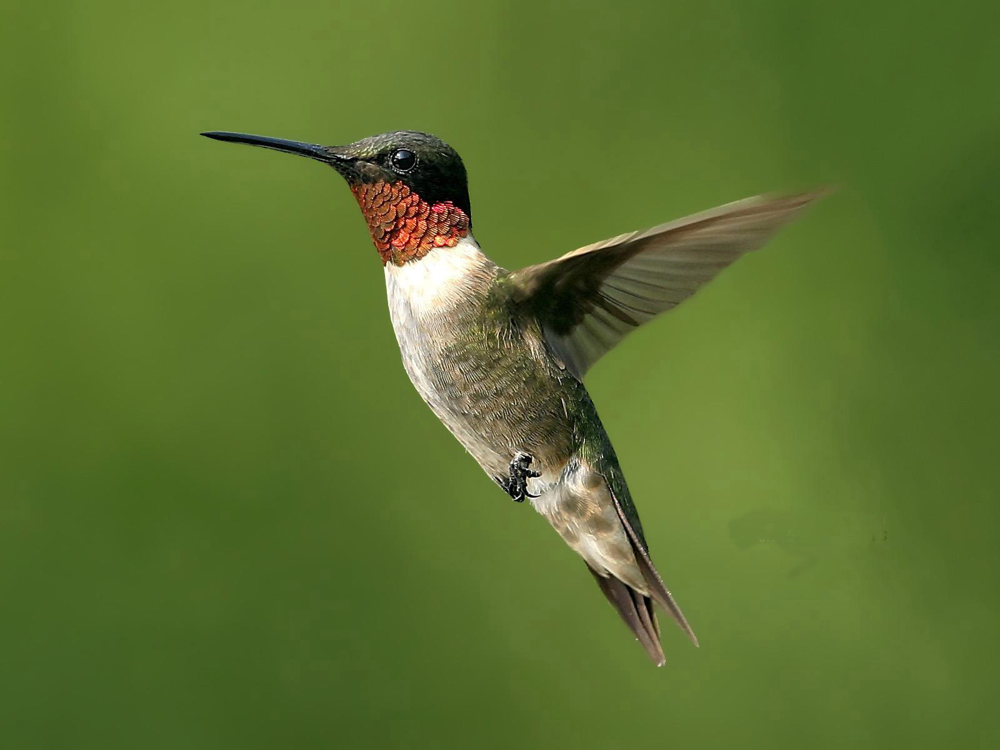

Kaela Calvert
It has become increasingly evident that the world is in an age of technology and it is important that we understand how these new technologies can be used to improve quality of life, not only for myself but also for citizens in my country. It is my hope to use what I have learnt to do just that. My name is Kaela Calvert. I am a proud Jamaican who was born and raised in the parish of St. Catherine. I am a student at the University of the West Indies (UWI) perusing a major in Software Engineering and a minor in Mathematics. My hobbies include singing, drawing, playing badminton and table tennis. Throughout my time at the Convent of Mercy Academy “Alpha” (former high school) I have learnt that a persons' character cannot only be purely academic achievements, but in order to become a well-rounded individual one must develop those skills that are necessary to having a personality that is fully developed in all aspects. It is therefore my passion to develop as a person who is skilled and knowledgeable in many things.I intend to make those strides in climbing the ladder of excellence, towards my dream of becoming a woman in STEM. I am intrested in web development because I think it will be benifitial to me in my career field